Wildlife
Marsupials - koala:
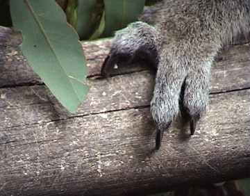
Marsupials - kangaroos:
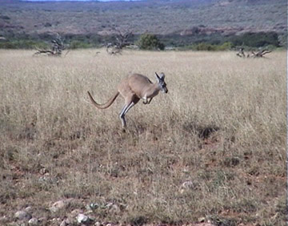 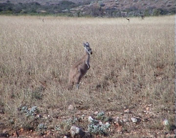 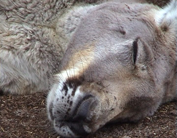
Marsupials - quokkas:
Only found on Rottnest Island and one or two other spots:
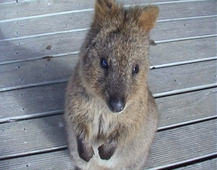 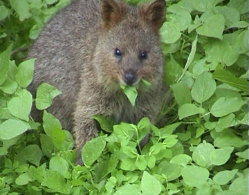 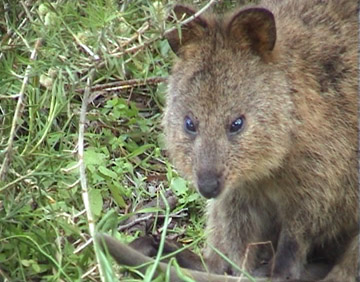 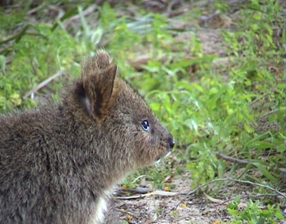
Marsupials - misc:
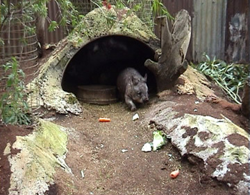 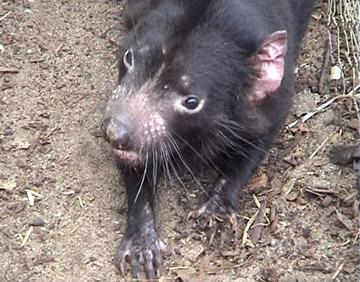
Dolphins - see
Shark Bay
Birds:
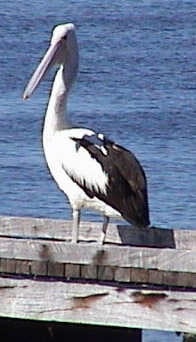
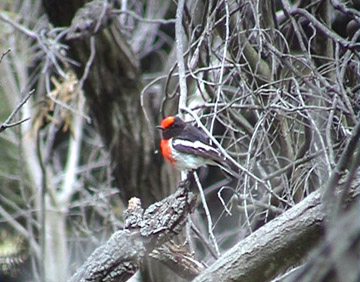
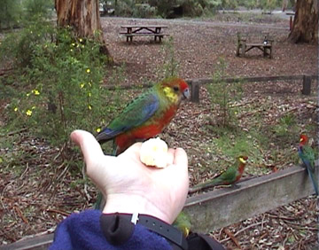
Lizards:
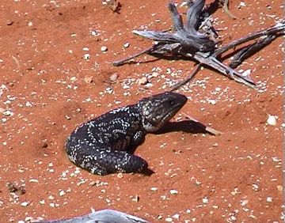 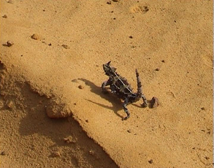
main page
 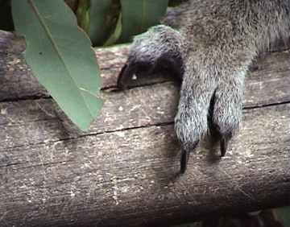
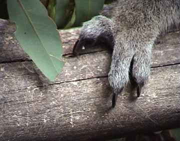

 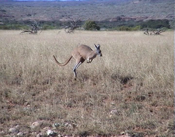
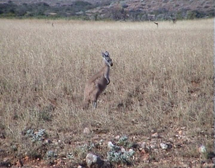
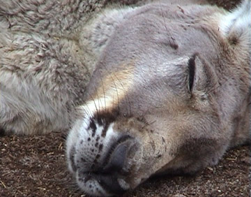
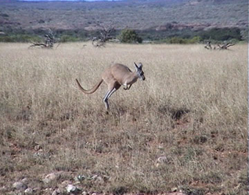
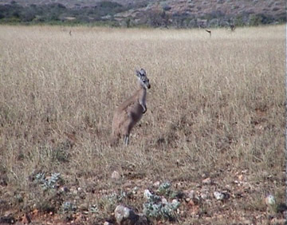
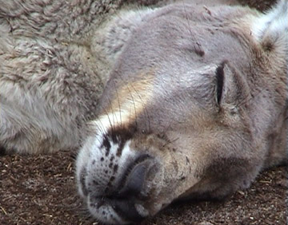
 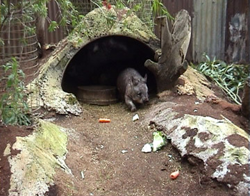
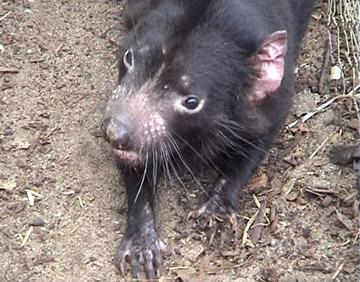
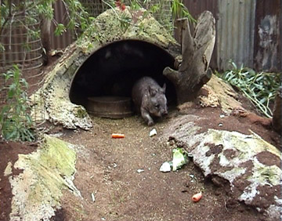
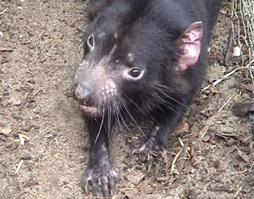
 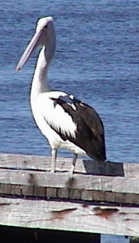
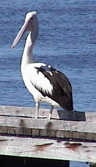


 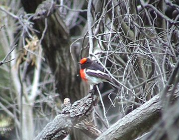
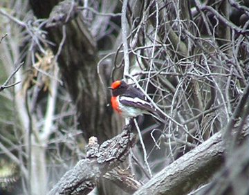


 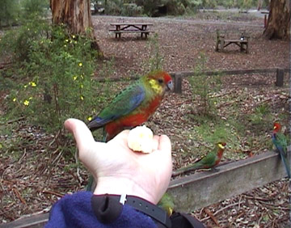
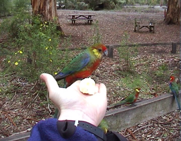